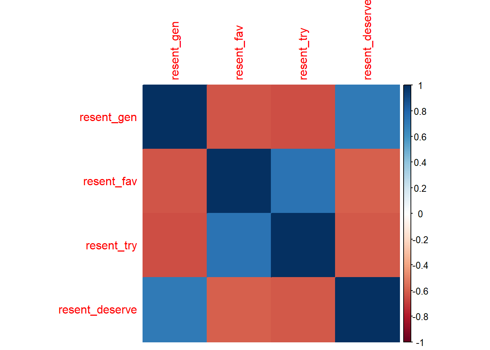
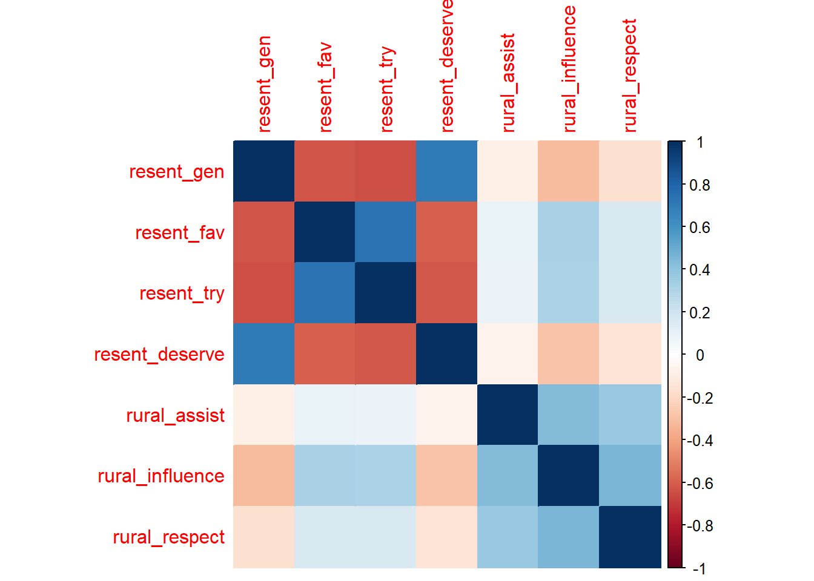

library(psych)
library(corrplot)
library(tidyverse)
library(haven)
library(MASS)
library(survey)
library(Hmisc)
library(stats)
library(skimr) #To quickly review your data
anes <- read_dta('C:/Users/Stefani.Langehennig/OneDrive - University of Denver/Documents/research/surveys-textbook-data/anes_timeseries_2020_stata_20220210.dta')9 Measurement & Item Scaling
9.1 Computing Cronbach’s Alpha
This tutorial will cover calculating Cronbach’s Alpha for a unidimensional scale. We will use the 2020 American National Election Survey and its scale for “Racial Resentment”. This scale is designed to measure feelings of racial animosity towards black Americans in a more indirect way than simply asking respondents if they are racist. It consists of 4 variables:
- “Irish, Italian, Jewish and many other minorities overcame prejudice and worked their way up. Blacks should do the same without any special favors.”
- “Generations of slavery and discrimination have created conditions that make it difficult for blacks to work their way out of the lower class.”
- “Over the past few years, blacks have gotten less than they deserve.”
- “It’s really a matter of some people not trying hard enough; if blacks would only try harder they could be just as well off as whites.”
We test the alpha level for reliability for these four items to better understand if they reliably measure the same underlying latent concept.
Let’s start by importing the packages we need, as well as our ANES data.
Next, we can subset our data and start exploring some of the trends around our variables of interest.
df <- data.frame(anes$V202300, anes$V202301, anes$V202302, anes$V202303)
new_names <- c("resent_gen", "resent_fav", "resent_try", "resent_deserve")#Give variables more informative names
# Update column names
colnames(df) <- new_names #Apply names to data frame for analysis
skim(df) #Check for missing data that should be recoded| Name | df |
| Number of rows | 8280 |
| Number of columns | 4 |
| _______________________ | |
| Column type frequency: | |
| numeric | 4 |
| ________________________ | |
| Group variables | None |
Variable type: numeric
| skim_variable | n_missing | complete_rate | mean | sd | p0 | p25 | p50 | p75 | p100 | hist |
|---|---|---|---|---|---|---|---|---|---|---|
| resent_gen | 0 | 1 | 1.94 | 3.17 | -9 | 1 | 2 | 4 | 5 | ▁▂▁▆▇ |
| resent_fav | 0 | 1 | 1.77 | 3.08 | -9 | 1 | 2 | 4 | 5 | ▁▂▁▇▇ |
| resent_try | 0 | 1 | 1.90 | 3.14 | -9 | 1 | 3 | 4 | 5 | ▁▂▁▆▇ |
| resent_deserve | 0 | 1 | 2.36 | 3.27 | -9 | 2 | 3 | 5 | 5 | ▁▁▁▃▇ |
df[df <= -1] <- NA #Recode negative values to NA for analysis
skim(df) #Validate that missing data is now treated as NA| Name | df |
| Number of rows | 8280 |
| Number of columns | 4 |
| _______________________ | |
| Column type frequency: | |
| numeric | 4 |
| ________________________ | |
| Group variables | None |
Variable type: numeric
| skim_variable | n_missing | complete_rate | mean | sd | p0 | p25 | p50 | p75 | p100 | hist |
|---|---|---|---|---|---|---|---|---|---|---|
| resent_gen | 911 | 0.89 | 2.94 | 1.47 | 1 | 2 | 3 | 4 | 5 | ▇▇▆▆▇ |
| resent_fav | 899 | 0.89 | 2.73 | 1.45 | 1 | 1 | 2 | 4 | 5 | ▇▇▃▅▅ |
| resent_try | 914 | 0.89 | 2.90 | 1.40 | 1 | 2 | 3 | 4 | 5 | ▇▇▇▆▇ |
| resent_deserve | 913 | 0.89 | 3.42 | 1.37 | 1 | 2 | 4 | 5 | 5 | ▃▅▅▅▇ |
Let’s start by examining the correlation matrix for the individual survey items of interest. All items are correlated at .6 or higher as we should expect if they are measuring the same latent concept. Note that two of the items have negative correlations. This indicates that the variable is reverse coded so that higher levels of the measure is equal to lower levels of racial resentment. This will need to be remembered if combining to create a new latent measure of racial resentment.
# Calculate correlation matrix
cor_matrix <- cor(df, use = "pairwise.complete.obs")
# Display correlation matrix as a table
cor_table <- round(cor_matrix, 2)
print(cor_table) resent_gen resent_fav resent_try resent_deserve
resent_gen 1.00 -0.62 -0.65 0.70
resent_fav -0.62 1.00 0.74 -0.60
resent_try -0.65 0.74 1.00 -0.62
resent_deserve 0.70 -0.60 -0.62 1.00# Plot correlation matrix as a heatmap
corrplot(cor_matrix, method = "color")
Now that we have a sense of the correlations between our variables of interest, we can compute our Cronbach’s Alpha using the psych package in R.
#Calculate Cronbach's Alpha using 'psych' package
##Generic format 'alpha(data, na.rm=TRUE, check.keys=TRUE)
#check.keys=TRUE is important as it checks the scale direction and, if necessary, flips the order of the scale prior to running the analysis. This deals with the negative correlation we saw in the correlation matrix. Default = FALSE and code will not run if you have an oppositely signed variable.
library(psych)
alpha(df, na.rm = TRUE, check.keys=TRUE) #Run the alpha calculationInterpreting alpha is very straightforward. First, we will evaluate the actual alpha level, which here is a robust .88. Remember, alpha ranges from 0 to 1, with higher values indicating a more reliable scale. Based on the Kaiser criterion, the general cut point for a reliable scale is .7 or larger. Alpha of .88 here represents a very strong and internally reliable scale.
The second thing to evaluate are the individual items in the analysis, specifically how alpha would change if it were to be dropped. This metric gives insight into how well each individual item fits the overall latent factor. If alpha goes up with its removal, that indicates the individual item might not truly be part of that concept and should potentially be removed from the scale. If the alpha goes down with its removal, that indicates the individual item is important to the overall latent factor and should be kept in the scale.
For illustration purposes, let’s add three additional variables that are not related to the racial resentment scale. If the new items are not related to racial resentment, we will see that removing the new items would result in a higher alpha level. We’ll add a series of three questions designed to measure rural resentment, or the perception that Americans who live in rural parts of the country are being overlooked and have too little influence in politics. These three questions measure:
- How much assistance rural areas get from government
- How much influence rural areas have in government
- How much respect rural people get from others
Note, this is entirely for pedagogical purposes. I do not believe these two concepts to be related. Like before, let’s go through our steps of subsetting the data and checking out our correlations.
df <- data.frame(anes$V202300, anes$V202301, anes$V202302, anes$V202303, anes$V202276x , anes$V202279x , anes$V202282x)
skim(df)| Name | df |
| Number of rows | 8280 |
| Number of columns | 7 |
| _______________________ | |
| Column type frequency: | |
| numeric | 7 |
| ________________________ | |
| Group variables | None |
Variable type: numeric
| skim_variable | n_missing | complete_rate | mean | sd | p0 | p25 | p50 | p75 | p100 | hist |
|---|---|---|---|---|---|---|---|---|---|---|
| anes.V202300 | 0 | 1 | 1.94 | 3.17 | -9 | 1 | 2 | 4 | 5 | ▁▂▁▆▇ |
| anes.V202301 | 0 | 1 | 1.77 | 3.08 | -9 | 1 | 2 | 4 | 5 | ▁▂▁▇▇ |
| anes.V202302 | 0 | 1 | 1.90 | 3.14 | -9 | 1 | 3 | 4 | 5 | ▁▂▁▆▇ |
| anes.V202303 | 0 | 1 | 2.36 | 3.27 | -9 | 2 | 3 | 5 | 5 | ▁▁▁▃▇ |
| anes.V202276x | 0 | 1 | 3.51 | 3.60 | -7 | 4 | 4 | 6 | 7 | ▂▁▁▇▆ |
| anes.V202279x | 0 | 1 | 3.44 | 3.66 | -7 | 4 | 4 | 6 | 7 | ▂▁▁▇▇ |
| anes.V202282x | 0 | 1 | 3.82 | 3.67 | -7 | 4 | 4 | 6 | 7 | ▂▁▁▇▇ |
new_names <- c("resent_gen", "resent_fav", "resent_try", "resent_deserve", "rural_assist", "rural_influence", "rural_respect")#Give variables more informative names
# Update column names
colnames(df) <- new_names #Apply names to data frame for analysis
skim(df) #Check for missing data that should be recoded| Name | df |
| Number of rows | 8280 |
| Number of columns | 7 |
| _______________________ | |
| Column type frequency: | |
| numeric | 7 |
| ________________________ | |
| Group variables | None |
Variable type: numeric
| skim_variable | n_missing | complete_rate | mean | sd | p0 | p25 | p50 | p75 | p100 | hist |
|---|---|---|---|---|---|---|---|---|---|---|
| resent_gen | 0 | 1 | 1.94 | 3.17 | -9 | 1 | 2 | 4 | 5 | ▁▂▁▆▇ |
| resent_fav | 0 | 1 | 1.77 | 3.08 | -9 | 1 | 2 | 4 | 5 | ▁▂▁▇▇ |
| resent_try | 0 | 1 | 1.90 | 3.14 | -9 | 1 | 3 | 4 | 5 | ▁▂▁▆▇ |
| resent_deserve | 0 | 1 | 2.36 | 3.27 | -9 | 2 | 3 | 5 | 5 | ▁▁▁▃▇ |
| rural_assist | 0 | 1 | 3.51 | 3.60 | -7 | 4 | 4 | 6 | 7 | ▂▁▁▇▆ |
| rural_influence | 0 | 1 | 3.44 | 3.66 | -7 | 4 | 4 | 6 | 7 | ▂▁▁▇▇ |
| rural_respect | 0 | 1 | 3.82 | 3.67 | -7 | 4 | 4 | 6 | 7 | ▂▁▁▇▇ |
df[df <= -1] <- NA #Recode negative values to NA for analysis
skim(df) #Validate that missing data is now treated as NA| Name | df |
| Number of rows | 8280 |
| Number of columns | 7 |
| _______________________ | |
| Column type frequency: | |
| numeric | 7 |
| ________________________ | |
| Group variables | None |
Variable type: numeric
| skim_variable | n_missing | complete_rate | mean | sd | p0 | p25 | p50 | p75 | p100 | hist |
|---|---|---|---|---|---|---|---|---|---|---|
| resent_gen | 911 | 0.89 | 2.94 | 1.47 | 1 | 2 | 3 | 4 | 5 | ▇▇▆▆▇ |
| resent_fav | 899 | 0.89 | 2.73 | 1.45 | 1 | 1 | 2 | 4 | 5 | ▇▇▃▅▅ |
| resent_try | 914 | 0.89 | 2.90 | 1.40 | 1 | 2 | 3 | 4 | 5 | ▇▇▇▆▇ |
| resent_deserve | 913 | 0.89 | 3.42 | 1.37 | 1 | 2 | 4 | 5 | 5 | ▃▅▅▅▇ |
| rural_assist | 994 | 0.88 | 4.74 | 1.33 | 1 | 4 | 4 | 6 | 7 | ▁▁▇▁▆ |
| rural_influence | 969 | 0.88 | 4.64 | 1.62 | 1 | 4 | 4 | 6 | 7 | ▂▁▇▁▇ |
| rural_respect | 966 | 0.88 | 5.06 | 1.28 | 1 | 4 | 5 | 6 | 7 | ▁▁▇▂▇ |
#Run correlations between the items in the proposed scale
# Calculate correlation matrix
cor_matrix <- cor(df, use = "pairwise.complete.obs")
# Display correlation matrix as a table
cor_table <- round(cor_matrix, 2)
print(cor_table) resent_gen resent_fav resent_try resent_deserve rural_assist
resent_gen 1.00 -0.62 -0.65 0.70 -0.09
resent_fav -0.62 1.00 0.74 -0.60 0.09
resent_try -0.65 0.74 1.00 -0.62 0.08
resent_deserve 0.70 -0.60 -0.62 1.00 -0.07
rural_assist -0.09 0.09 0.08 -0.07 1.00
rural_influence -0.32 0.32 0.31 -0.28 0.44
rural_respect -0.16 0.16 0.17 -0.15 0.37
rural_influence rural_respect
resent_gen -0.32 -0.16
resent_fav 0.32 0.16
resent_try 0.31 0.17
resent_deserve -0.28 -0.15
rural_assist 0.44 0.37
rural_influence 1.00 0.46
rural_respect 0.46 1.00# Plot correlation matrix as a heatmap
corrplot(cor_matrix, method = "color")
Examining the correlations, we see that the three new items are not strongly related to the existing racial resentment items and even have relatively weak correlations between each other. This will help illustrate how to identify items that do not belong in a scale.
Next, we re-estimate the alpha level with the three additional variables included. Remember, the initial alpha level was .88 so anything below that would indicate a less reliable scale with items that might not belong.
alpha(df, na.rm = TRUE, check.keys=TRUE) #Run the alpha calculationThe first thing to note is that the overall alpha of this new seven item scale is lower, ~.79, than the original .88 results indicating a less reliable scale. The new items included have harmed the reliability of the scale overall.
Next, we look at the alpha level if each item were removed. The four initial items included in the racial resentment scale all have alpha levels lower than the overall alpha, which indicates the scale would be worse if any of them were removed. That is what we expected to happen. For the other three items, the alpha levels would either stay the same or get larger if each individual one was removed, indicating that these new items probably do not fit the overall latent concept of racial resentment.
Coupling these findings with the small correlations and the lack of theory, we would conclude that the rural resentment questions do not measure the same concept as racial resentment.
The final step to know is how to combine existing survey questions into a scale. The easiest way, provided they are on the exact same scale (which generally should be the case), is to combine them and divide by the total number of items in the scale. For the racial resentment scale, we would sum across the four items and then divide by 4, since there are 4 items in the scale. However, this is when we must flip the scale so that higher values equal the same thing.
Important
Always check the coding scheme for your variables. Some variables may be coded in different directions (“reverse coded”). Not having variables coded in the same direction can introduce bias into your analyses and result in wrong conclusions.
We start by creating new variables for each of the four racial resentment questions. First, we examine the codebook and determine that the resentment favoritism and try harder questions are reverse coded so that must be accounted for when creating the new measures. We simply flip the scale direction while saving a new measure in the existing anes data frame.
#Working out of the original data frame, anes, so we can save the new variable there for analysis purposes.
anes <- anes %>% #This creates new variable
mutate(resent_gen = case_when(
V202300 ==1 ~ 1,
V202300 ==2 ~ 2,
V202300 ==3 ~ 3,
V202300 ==4 ~ 4,
V202300 ==5 ~ 5
))
anes <- anes %>% #Note the reverse coding
mutate(resent_fav = case_when(
V202301 ==1 ~ 5,
V202301 ==2 ~ 4,
V202301 ==3 ~ 3,
V202301 ==4 ~ 2,
V202301 ==5 ~ 1
))
anes <- anes %>% #Note the reverse coding
mutate(resent_try = case_when(
V202302 ==1 ~ 5,
V202302 ==2 ~ 4,
V202302 ==3 ~ 3,
V202302 ==4 ~ 2,
V202302 ==5 ~ 1
))
anes <- anes %>%
mutate(resent_deserve = case_when(
V202303 ==1 ~ 1,
V202303 ==2 ~ 2,
V202303 ==3 ~ 3,
V202303 ==4 ~ 4,
V202303 ==5 ~ 5
))
#With the new variables coded in same direction, we create the new scale 'racial_resent'
anes <- anes %>%
mutate(racial_resent = (resent_gen + resent_fav + resent_try + resent_deserve) / 4) #Add across individual items and divide by the total number of items. Note this uses casewise deletion so any case that did not answer each question is removed from the calculation
summary(anes$racial_resent) #Examine the Min. 1st Qu. Median Mean 3rd Qu. Max. NA's
1.00 2.25 3.00 3.18 4.25 5.00 941 anes %>%
count(racial_resent)# A tibble: 18 × 2
racial_resent n
<dbl> <int>
1 1 410
2 1.25 218
3 1.5 332
4 1.75 326
5 2 406
6 2.25 385
7 2.5 451
8 2.75 473
9 3 753
10 3.25 376
11 3.5 395
12 3.75 364
13 4 428
14 4.25 372
15 4.5 377
16 4.75 400
17 5 873
18 NA 941# Create a new df object with updated variables
# df <- anes %>%
#select(resent_gen, resent_fav, resent_try, resent_deserve, racial_resent) The final check is to correlate the new scale with the individual items. Let’s take a look at the correlations and correlation matrix for these updated variables:
# Calculate the correlation matrix
cor_matrix <- cor(df, use = "complete.obs") #Note "complete.obs" removes any case with a NA value
# View the correlation matrix
print(cor_matrix) resent_gen resent_fav resent_try resent_deserve rural_assist
resent_gen 1.00000000 -0.62106012 -0.64831418 0.70164739 -0.09200728
resent_fav -0.62106012 1.00000000 0.74010498 -0.59809976 0.09488715
resent_try -0.64831418 0.74010498 1.00000000 -0.61623995 0.08439315
resent_deserve 0.70164739 -0.59809976 -0.61623995 1.00000000 -0.06925494
rural_assist -0.09200728 0.09488715 0.08439315 -0.06925494 1.00000000
rural_influence -0.31386554 0.32085224 0.31090924 -0.27931345 0.44199218
rural_respect -0.16305488 0.16372950 0.16845675 -0.14736070 0.37249420
rural_influence rural_respect
resent_gen -0.3138655 -0.1630549
resent_fav 0.3208522 0.1637295
resent_try 0.3109092 0.1684567
resent_deserve -0.2793135 -0.1473607
rural_assist 0.4419922 0.3724942
rural_influence 1.0000000 0.4594196
rural_respect 0.4594196 1.0000000# Graph the results
corrplot(cor_matrix, method = "color")Lastly, we want to examine the newly created measure to ensure that it was created appropriately. Since the recoding approach we took kept the original scale in tact of 1-5, we should see 1 as the minimum value and 5 as the maximum. That is what we see in the results. We also see values between the whole numbers such as 1.25 and 1.5 since the denominator in our recode was 4. All of these indicators look good.
Based on the correlations above, the new scale should be highly, but not perfectly, correlated with each of the individual items. That is exactly what we see here. The correlation is at least .84 between the new scale and the individual items but none are perfectly correlated. This indicates that our new scale was created successfully and is now ready to be analyzed.